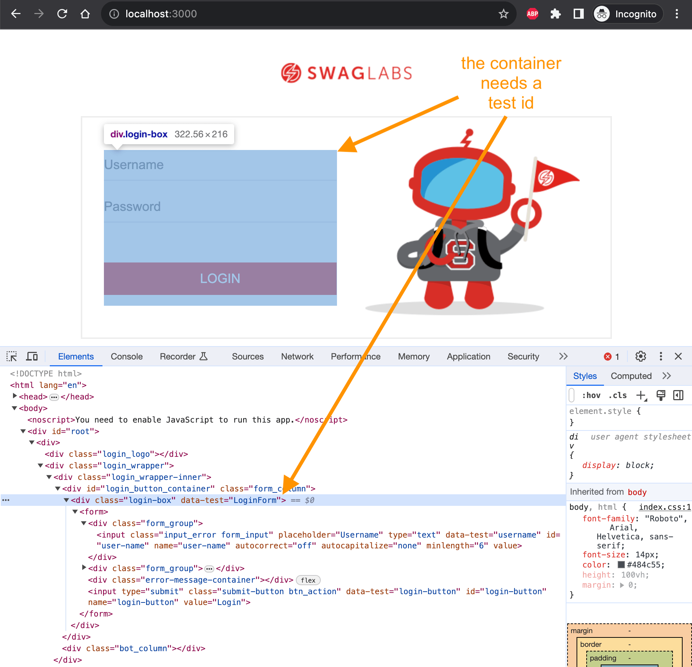
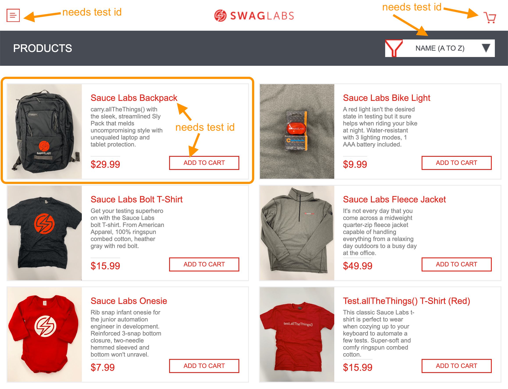

When writing Cypress end-to-end or component tests, it is nice to have ways to easily select elements on the page. For example:
1 | <!-- not nice --> |
Here is how I think about adding data test ids like data-testid, or data-cy to my HTML markup:
- make it simple to interact with the page
- make it simple to verify the page is showing the right information
Tip: I suggest you read Cypress best practices for selecting elements
Why test id attributes
I like using explicit test ids to select elements for two reasons:
- makes it obvious to every developer that this attribute is used during testing. Any other attribute can be changed or removed, but if the
data-testis modified or removed the developer is expected to update the tests. - finding specs to run to test the source files with the given test ids is easy, see my blog posts Using Test Ids To Pick Cypress Specs To Run and Pick Tests Using Test Ids From Another Source Repo.
Nothing stops you from implementing a similar policy for aria attributes. You can also verify the a11y attributes from the test when needed:
1 | cy.getByTest('CloseButton').should('have.attr', 'aria-role', 'button') |
So how do I assign test ids to the elements on the page? Here are some practical examples from my Testing The Swag Store course.
The login page
Let's start with the first UI step: logging in. The container that has the input fields needs a test id, plus the input elements and the "Login" button.

Using a custom command cy.getByTest in my project I can fill the form without relying on random HTML attributes like name or password. I will add data-test attributes to:
- the form component
- each input field to be filled
- the login button
Here is the test:
1 | it('fills the form and logs in', () => { |
Tip: I love using cy.within command to limit query commands to the parent element. But note that this command does not retry.
Selecting the login button by its data-test attribute works better long-term than using text and cy.contains command. The text might change, but the data-test makes it clear: if you want to change this attribute, you better run the tests.
The inventory page
The inventory page has several buttons in the header, the list of products, plus the sort selection. Each inventory item has text that we might want to verify: the title, the price (maybe), plus the button to add the item to the cart.

I also add a data-test attribute to the top level container element: it will help verify we are on the right page if the inventory has zero items.
Here is a typical test to verify the inventory page loads.
1 | beforeEach(() => { |
The two assertions make it easy to understand what is happening:
1 | // the inventory component loads |
Let's verify the information shown by the first item. Since we added test ids to the individual text fields, we can use the have.text assertion:
1 | cy.getByTest('InventoryPageItem') |
Tip: Cypress comes with many Chai and Chai-jQuery and Sinon-Chai assertions, see my examples
Since checking an element's text is so common, I prefer writing custom commands like cy.getByTest that can act like both cy.get and cy.contains commands.
1 | cy.getByTest('InventoryPageItem') |
Before we move to the cart page, let's confirm the inventory page updates the cart badge
1 | it('adds items to the cart', () => { |
Here are the two test ids we used
The cart page
Let's test just the cart page. We can set the user local state with items in the cart and visit the page.
1 | it('shows the cart items', { viewportHeight: 1200 }, () => { |
By setting the data in the localStorage we know exactly what to expect to see on the page. Thus we can loop through the list and confirm each CartItem item.
Bonus: show test ids
If you use my plugin changed-test-ids you can see all test ids used in the source files and in the spec files. For example, let's list test ids used in the specs and also list all test ids not covered by specs.
1 | { |
Let's list test ids in the specs
1 | $ npm run specs |
Let's see all test ids without any tests
1 | $ npm run missing-tests |
Nice.